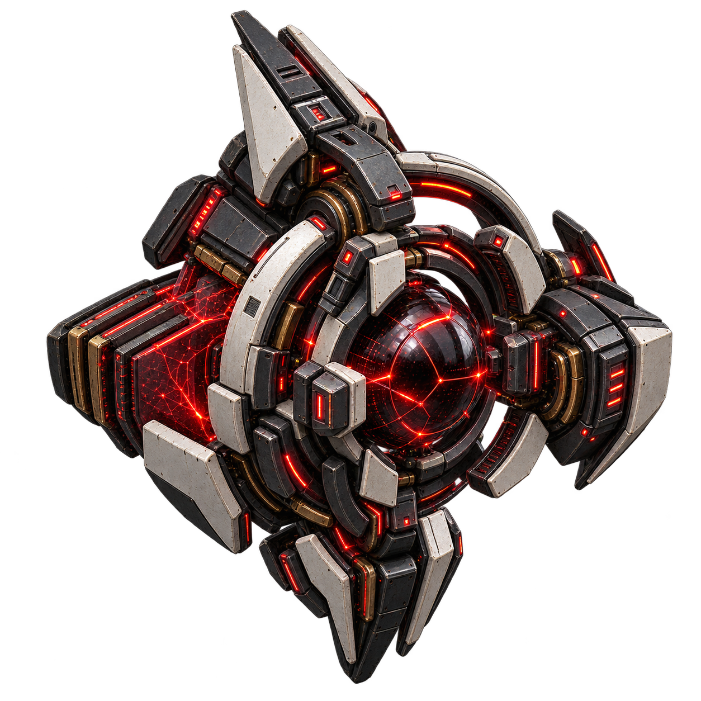

VIREX / PREDYKCJA I TRASA
VIREXORACLE_

01 / VIREX ORACLE
Wyznacza najlepszy moment, trasę i wariant transmisji GhostSignalu.
SPECJALIZACJAPredykcja i wyznaczanie trasy sygnału.
RYZYKO SKRAJNEMoże potraktować ludzi jak aktywa optymalizowane tak samo jak infrastruktura.
FUNKCJA KATALOGOWA / REKONSTRUKCJA
05 / KOMPONENTY
 V1Ledger Nexus
V1Ledger Nexus V2Backdoor Forge
V2Backdoor Forge V3Mimicry Engine
V3Mimicry Engine V4Acquisition Drive
V4Acquisition Drive V5Probability Core
V5Probability Core